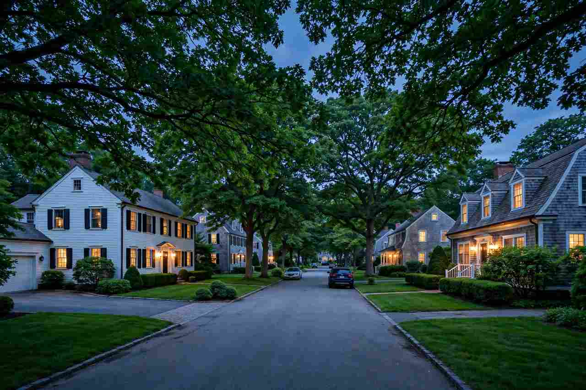

Rodent Control · Mays Landing, NJ
Fast Rodent Control in Mays Landing, NJ
Rats in the attic or mice in the kitchen in Mays Landing? Murvo provides same-day rodent control with local crews who inspect first, remove the animals already inside, and seal the entry points they used. Every job is quoted flat-rate in writing before work begins and backed by a written guarantee, covering homes and businesses across Atlantic County.
24/7Availability
1ZIP codes covered
Same-dayResponse
Licensed · Upfront options · Written guarantees · Fully insured
Mays Landing at a glance
Local Rodent Control for Mays Landing, NJ.
Atlantic County
Countysouthern New Jersey
RegionTrenton · 53 mi
Nearest metro53 miles south of Trenton
From Trenton1
ZIP codes covered Service by service in Mays Landing
Rodent Control Services Available in Mays Landing
Thirty rodent services, one local standard in Mays Landing: inspection-led, exclusion-first, and quoted in writing before work begins. Browse the full list for Atlantic County below - each section explains what the service involves here, what it typically costs nationally, and how fast we can start.
- 01Rodent Control↗
- 02Rodent Inspection↗
- 03Rodent Removal↗
- 04Rodent Exclusion↗
- 05Rodent Proofing↗
- 06Rat Control↗
- 07Mice Control↗
- 08Mouse Removal↗
- 09Rat Removal↗
- 10Rodent Trapping↗
- 11Rodent Baiting↗
- 12Rodenticide Application↗
- 13Attic Rodent Removal↗
- 14Crawl Space Rodent Removal↗
- 15Wall Rodent Removal↗
- 16Kitchen Rodent Control↗
- 17Garage Rodent Control↗
- 18Commercial Rodent Control↗
- 19Residential Rodent Control↗
- 20Emergency Rodent Removal↗
- 21Same-Day Rodent Control↗
- 22Rodent Damage Repair↗
- 23Rodent Waste Cleanup↗
- 24Rodent Disinfection↗
- 25Rodent Odor Removal↗
- 26Dead Rodent Removal↗
- 27Rodent Dropping Cleanup↗
- 28Rodent Exclusion for Roofs↗
- 29Rodent Exclusion for Vents↗
- 30Rodent Exclusion for Chimneys↗
Rodent Control in Mays Landing
Rodent Control in Mays Landing
In pre-war rowhomes, brownstones, triple-deckers, and older single-family homes, rodents rarely use the front door. They follow basement foundations, sewer and pipe chases, shared party walls, and alley-facing garage and door seals, settle where it stays warm, and expand from there across Atlantic County homes. Our rodent control pairs careful identification of Norway rat (Rattus norvegicus) and House mouse (Mus musculus) with trapping, sealing, and monitoring, handled by licensed and insured technicians who document each stage for you.
In Mays Landing, rodent control is not a generic spray-and-go service. Rodents exploit basement foundations, sewer and pipe chases, shared party walls, and alley-facing garage and door seals in pre-war rowhomes, brownstones, triple-deckers, and older single-family homes, and a fix that ignores those routes does not last. Murvo's Mays Landing team inspects first, shows you the evidence - droppings, gnaw marks, entry gaps - and then lays out the work with a flat-rate written quote. We serve all of Atlantic County from Mays Landing, including McKee City, English Creek, and every job is covered by our written workmanship guarantee. In Mays Landing, rodent control calls most often involve pre-war rowhomes, brownstones, triple-deckers, and older single-family homes, where basement foundations, sewer and pipe chases, shared party walls, and alley-facing garage and door seals decide whether the fix holds.
We start by identifying whether Norway rat (Rattus norvegicus), House mouse (Mus musculus), or both are active, because each species nests, feeds, and travels differently. Once numbers fall, exclusion sealing closes the route back in, droppings and nesting debris are removed hygienically, and follow-up monitoring checks the attic, crawl space, and kitchen until readings stay clear. Nothing is sealed while animals remain inside. Traps are placed on proven runways along walls, beams, and pipe runs, checked on schedule, and adjusted as catches change. That order protects your home.
Getting started takes one conversation, day or night, because our lines stay open 24/7. Work proceeds only after your approval, in stages you can follow, and a final walkthrough reviews every seal and every monitoring result before sign-off. We book a window that suits your household, confirm access needs in advance, and arrive prepared. Questions after sign-off are welcome at any hour, and the same written record helps any technician pick up your case immediately.
In most of Mays Landing, we can offer a same-day appointment for rodent control, and our lines are open 24/7 for urgent cases like scratching in the walls or a rodent in a living area. Your technician inspects first, explains the plan, and quotes a flat rate in writing before any work begins, so help starts fast without surprises. If you are seeing signs now, an inspection this week is the fastest way to know which situation you are in.
The honest answer is that it depends on species, activity level, and how much sealing your home needs, which is why Murvo inspects first and then gives you a flat-rate quote in writing. For national context only, Angi's 2026 data averages rat and mouse removal and control at $396, typically $189 to $655; that is not a Murvo price, and your written quote is the figure you pay.
Rodent Inspection in Mays Landing
Rodent Inspection in Mays Landing
What should you expect to hold afterwards? Photographs, a species identification, a map of entry points, and priorities you can act on in stages. That is a Murvo rodent inspection in Mays Landing: licensed and insured, unhurried, and honest about separating urgent problems from minor weaknesses that can safely wait.
Homeowners in Mays Landing call Murvo for rodent inspection because the problem here is specific: Norway rat (Rattus norvegicus) pressure around pre-war rowhomes, brownstones, triple-deckers, and older single-family homes, tight access at basement foundations, sewer and pipe chases, shared party walls, and alley-facing garage and door seals, and activity that follows the local season. Our Atlantic County crews diagnose the real source before recommending work, explain the options in plain language, and quote one flat rate in writing. Across Mays Landing - including McKee City, English Creek - every visit is backed by licensed, insured technicians and our written workmanship guarantee. Around Mizpah, Estell Manor, Dorothy, the pattern is similar: House mouse (Mus musculus) finds basement foundations, sewer and pipe chases, shared party walls, and alley-facing garage and door seals first, and lasting rodent inspection has to close those routes.
The inspection starts outside, where we check the foundation, siding, pipe penetrations, garage doors, and roof junctions, because mice can squeeze through a gap the width of a pencil. We also note where pre-war rowhomes, brownstones, triple-deckers, and older single-family homes create hidden routes through basement foundations, sewer and pipe chases, shared party walls, and alley-facing garage and door seals. Inside, we examine the attic, crawl space, insulation, stored items, and food areas for droppings, nests, rub marks, and gnaw damage. Every finding is photographed and explained, and recommendations are marked urgent or preventive so you can stage the work sensibly.
Booking a rodent inspection in Mays Landing takes one call, and same-day appointments are often available. Findings are explained with photos before you receive a flat-rate written quote for any recommended work. Nothing proceeds without your approval, and urgent items are clearly flagged. Your technician arrives on time, walks the property with you, and inspects the attic, crawl space, and exterior in one visit. You keep the full written report either way.
You do not have to wait days for answers in Mays Landing. Same-day rodent inspection appointments are available in most areas, urgent calls are taken 24/7, and most home inspections take under an hour. You finish the visit with photos, written findings, and flat-rate pricing for anything we recommend. If you are seeing signs now, an inspection this week is the fastest way to know which situation you are in.
Your exact rodent inspection price is confirmed before we visit, and any follow-up work is quoted as a flat rate in writing after the inspection — no hourly billing. For context, Angi's 2026 data puts a professional rodent inspection nationally at $100 to $200, often credited toward the job if you proceed.
Rodent Removal in Mays Landing
Rodent Removal in Mays Landing
In pre-war rowhomes, brownstones, triple-deckers, and older single-family homes, removal fails when it ignores how rodents actually live: close to food, water, and undisturbed cover near basement foundations, sewer and pipe chases, shared party walls, and alley-facing garage and door seals. Our rodent removal in Atlantic County starts by mapping that daily pattern, then removes animals room by room, including attics and garages, until monitoring, not optimism, says the home is clear.
Homeowners in Mays Landing call Murvo for rodent removal because the problem here is specific: Norway rat (Rattus norvegicus) pressure around pre-war rowhomes, brownstones, triple-deckers, and older single-family homes, tight access at basement foundations, sewer and pipe chases, shared party walls, and alley-facing garage and door seals, and activity that follows the local season. Our Atlantic County crews diagnose the real source before recommending work, explain the options in plain language, and quote one flat rate in writing. Across Mays Landing - including McKee City, English Creek - every visit is backed by licensed, insured technicians and our written workmanship guarantee. Seasonal timing matters for rodent removal in Mays Landing: rodents surge in Mays Landing from October through March.
Why trap first instead of reaching for poison? Because trapped animals can be counted, removed, and disposed of hygienically, while poisoned animals can die where nobody can reach them. Technicians therefore match traps to species and setting, work attics, voids, and kitchens in sequence, and retrieve any carcass promptly. Contaminated nesting material is bagged carefully, affected surfaces are disinfected before any cleaning, and dry sweeping of droppings is never used, since that spreads contamination into the air. The sequence ends with monitoring, because removal without a confirming check is a claim rather than a result.
Same-day removal appointments are available across much of Mays Landing for active infestations. Every stage is explained in plain language as work proceeds. After a quick inspection, your background-checked technician explains the trapping plan and gives you a flat-rate written quote; work starts only with your approval. Follow-up checks are booked before we leave, contaminated areas are made safe, and monitoring confirms the property is clear before we sign off. You keep copies of all visit records.
When rodents are active indoors in Mays Landing, waiting rarely helps. Rodent removal can usually start the same day you call, our line answers 24/7 for a rodent loose in a living area, and the first visit sets traps straight away. Scheduled returns then clear and reset them until monitoring shows the home is clear. Around Mays Landing, pre-war rowhomes, brownstones, triple-deckers, and older single-family homes give rodents the most cover, which is why entry points get checked before traps are set.
Cost depends on the species, how many animals are active, and how much sealing the home needs afterwards, so Murvo inspects first and quotes one flat rate in writing. For national context only, Angi's 2026 data averages rat and mouse removal at $396, typically $189 to $655. That benchmark is not a Murvo price; your written quote is the exact figure.
Rodent Exclusion in Mays Landing
Rodent Exclusion in Mays Landing
Exclusion is also the safest long-term strategy for Mays Landing homes, because a sealed house needs far less bait and fewer repeat treatments. Murvo's licensed, insured crews finish roof, vent, and chimney work to weatherproof standards, walk every sealed opening with you afterwards, and back the result with a written workmanship guarantee you can hold us to.
When you need rodent exclusion in Mays Landing, the job starts with what is actually happening in your part of Atlantic County. Murvo crews work Mays Landing every week, so they know how Norway rat (Rattus norvegicus) and House mouse (Mus musculus) behave around pre-war rowhomes, brownstones, triple-deckers, and older single-family homes here - and where they get in: basement foundations, sewer and pipe chases, shared party walls, and alley-facing garage and door seals. We arrive equipped for the full job, confirm the flat rate in writing before work begins, and cover the whole Mays Landing area, including McKee City, English Creek. No call-center runaround and no open-ended hourly billing - just a local crew, a clear plan, and a written quote you approve first. Seasonal timing matters for rodent exclusion in Mays Landing: rodents surge in Mays Landing from October through March.
The sequence matters as much as the materials. A later monitoring check tests the work honestly, revisiting each sealed point for fresh rub marks, droppings, or gnawing. Active openings are closed first, inactive weaknesses next, and purely cosmetic gaps last, so protection arrives where pressure is highest. Photographs record every finished seal with its location, building a reference you keep. Because a properly sealed home needs far less ongoing treatment, exclusion also lowers long-term reliance on bait. The final monitoring visit therefore matters as much as the sealing day itself, and its findings are shared.
The visit starts with a check that no animals remain inside, using trapping and monitoring where needed. A later re-check confirms the seals are holding and activity has stopped. Once clear, your background-checked crew seals the agreed openings with chew-resistant materials, working cleanly around your home. Before leaving, we show you each finished seal, explain how it was protected, and confirm the guarantee paperwork. You approve the finished work before we close the job.
The first step is a survey, and in Mays Landing we can often schedule that survey the same day you call about rodent exclusion. Sealing follows once active animals are cleared — nothing is ever sealed inside — and most homes are fully sealed within days, with entry points near wiring or food areas handled first. Around Mays Landing, pre-war rowhomes, brownstones, triple-deckers, and older single-family homes give rodents the most cover, which is why entry points get checked before traps are set.
For national context, Angi's 2026 data puts basic exclusion at $200 to $600, depending on access and the number of openings. That is a benchmark, not a Murvo price. After surveying your Mays Landing home, we list every opening that needs sealing and quote one flat rate in writing, so you pay for the work your property actually needs and nothing more.
Rodent Proofing in Mays Landing
Rodent Proofing in Mays Landing
In pre-war rowhomes, brownstones, triple-deckers, and older single-family homes, prevention is a checklist hiding in plain sight: light under doors, unscreened vents, branches touching the roof, and clutter against walls near basement foundations, sewer and pipe chases, shared party walls, and alley-facing garage and door seals. Murvo works through that checklist across Atlantic County properties, separating simple homeowner fixes from specialist sealing, so money goes only where professional materials genuinely help.
In Mays Landing, rodent proofing is not a generic spray-and-go service. Rodents exploit basement foundations, sewer and pipe chases, shared party walls, and alley-facing garage and door seals in pre-war rowhomes, brownstones, triple-deckers, and older single-family homes, and a fix that ignores those routes does not last. Murvo's Mays Landing team inspects first, shows you the evidence - droppings, gnaw marks, entry gaps - and then lays out the work with a flat-rate written quote. We serve all of Atlantic County from Mays Landing, including McKee City, English Creek, and every job is covered by our written workmanship guarantee. The Mays Landing crews who handle rodent proofing also handle the follow-through - proofing, cleanup, and monitoring - so one visit can close the whole problem.
Proofing starts with a whole-property assessment inside and out, from overhanging branches and cluttered garages to unsealed vents and gaps under doors. We also address attractants: securing pet food and bird seed storage, trimming vegetation away from walls, and clearing harborage. Every item is prioritized so essential work happens first. The plan typically combines structural sealing of utility entries and foundation cracks with mesh screening on vents, chimneys, and rooflines, plus door sweeps where light shows underneath. Photos show each weakness we find.
On proofing day, expect one tidy visit for most homes. Before leaving, you walk the finished work together, confirm the guarantee in writing, and book the seasonal re-check that keeps the protection current year after year. Agreed sealing and screening are completed, sweeps are fitted, and attractant advice is tailored to your garage, kitchen, and yard. The re-check is not a formality, because it catches shifted sweeps, damaged screens, and new gaps before rodents discover them first.
Proofing is planned work rather than an emergency, but you can still move fast: rodent proofing surveys in Mays Landing are often available the same day and always within a few days. Once you approve the plan, most work is finished in a single visit, ideally before colder weather drives rodents indoors. In Atlantic County, activity follows the local season, so timing the work matters as much as the method.
For national context, Angi's 2026 data puts exclusion, the core of proofing, at $200 to $600 for basic work. That figure is a benchmark, not a Murvo price. After surveying your Mays Landing property, we separate quick homeowner wins from specialist sealing and quote the professional work as one flat rate in writing, so you can stage spending sensibly.
Rat Control in Mays Landing
Rat Control in Mays Landing
What separates control from a temporary lull? Monitoring that continues after the last catch. Murvo keeps checking until routes stay quiet, removes trapped rats hygienically, and finishes with exclusion so replacements cannot follow the same path. Licensed, insured technicians document every visit, and urgent calls are answered 24/7.
Homeowners in Mays Landing call Murvo for rat control because the problem here is specific: Norway rat (Rattus norvegicus) pressure around pre-war rowhomes, brownstones, triple-deckers, and older single-family homes, tight access at basement foundations, sewer and pipe chases, shared party walls, and alley-facing garage and door seals, and activity that follows the local season. Our Atlantic County crews diagnose the real source before recommending work, explain the options in plain language, and quote one flat rate in writing. Across Mays Landing - including McKee City, English Creek - every visit is backed by licensed, insured technicians and our written workmanship guarantee. The Mays Landing crews who handle rat control also handle the follow-through - proofing, cleanup, and monitoring - so one visit can close the whole problem.
Wary rats punish rushed trapping, so the program begins with patience. Only then are traps set, checked frequently, and repositioned as the pattern shifts. Catches are recorded by location, giving a clear picture of colony size and movement. Exclusion follows at rooflines and entry points, and monitoring devices remain in place afterwards to verify that quiet routes have genuinely stayed quiet. Unset traps are placed on confirmed runways and pre-baited until feeding becomes confident and regular. Counts matter here, because a falling catch trend tells a different story from a single lucky night.
Call for rat control in Mays Landing and we will book an inspection, often the same day for active problems. Trapping visits then run on a set schedule, with placements adjusted as activity shifts. The job closes only when monitoring confirms rats are gone and exclusion is complete. Your technician maps routes and harborage, explains the trapping plan, and gives you a flat-rate written quote before any work begins. Your guarantee is confirmed in writing.
Call day or night — urgent rat control calls in Mays Landing are answered 24/7, and a same-day inspection can usually start the program. Pre-baiting begins on that first visit once you approve the written quote, traps are set when rats are feeding confidently, and scheduled checks continue until activity stops. The written quote for your Mays Landing property will spell out exactly which of these applies before any work starts.
Species, colony size, and the number of entry points to seal all affect rat work, which is why Murvo inspects first and quotes one flat rate in writing. Angi's 2026 figures, given for national context only, average rat control and removal at $396 and typically run $189 to $655; the written quote for your Mays Landing home is the exact price.
Mice Control in Mays Landing
Mice Control in Mays Landing
One mouse seen in a Mays Landing kitchen usually means more are nesting unseen, and mice breed quickly enough that a small problem becomes a large one within weeks. Murvo offers same-day appointments where available, builds the program around trapping and sealing rather than baits, and backs the finished work with a written workmanship guarantee for lasting peace of mind.
Homeowners in Mays Landing call Murvo for mice control because the problem here is specific: Norway rat (Rattus norvegicus) pressure around pre-war rowhomes, brownstones, triple-deckers, and older single-family homes, tight access at basement foundations, sewer and pipe chases, shared party walls, and alley-facing garage and door seals, and activity that follows the local season. Our Atlantic County crews diagnose the real source before recommending work, explain the options in plain language, and quote one flat rate in writing. Across Mays Landing - including McKee City, English Creek - every visit is backed by licensed, insured technicians and our written workmanship guarantee. Seasonal timing matters for mice control in Mays Landing: rodents surge in Mays Landing from October through March.
Our integrated approach favors trapping and sealing over baits, with genuinely pet-safe options for family homes. Droppings in cabinets are never dry-swept; following CDC guidance, surfaces are disinfected first so contamination is not spread into the air, and nesting debris is bagged and removed. Food-storage advice removes the attraction that drew mice in, and sealing is completed as whole-home proofing so kitchens, attics, and voids stay clear after the program ends. Catch records show exactly how numbers fall each visit.
During the program, store opened food in sealed containers and keep trap areas undisturbed. At the end you review the catch record together, receive prevention advice, and confirm the written guarantee before close. Your background-checked technician returns to clear and reset clusters, adjusts placements if the pattern shifts, and completes sealing once numbers fall. Prevention notes cover the exact storage and sealing issues found at your home, making them practical rather than generic advice.
Mice programs move quickly in Mays Landing: a mice control survey can often be arranged the same day you call, and traps are set on that first visit once you approve the quote. Because mice investigate new objects fast, catches usually begin quickly, and scheduled check visits follow until a final confirmation shows activity has fully stopped. A Mays Landing inspection confirms it on site - dropping size, gnaw marks, and entry points tell the story quickly.
Mouse work is priced by the number of rooms affected and the amount of sealing involved, so Murvo surveys first and quotes one flat rate in writing. For national context only, Angi's 2026 data averages rat and mouse control and removal at $396, typically $189 to $655. That is not a Murvo price; your written quote is exact.
Mouse Removal in Mays Landing
Mouse Removal in Mays Landing
Removal is only half the job in Atlantic County homes, because new mice follow the same scent trails and gaps within days. Murvo pairs trapping with droppings and nesting cleanup, safe disinfection, and proper exclusion sealing, all delivered by licensed, insured, background-checked technicians. For repeated problems, seasonal proofing checks sweeps and seals before the fall rush of mice seeking warmth.
In Mays Landing, mouse removal is not a generic spray-and-go service. Rodents exploit basement foundations, sewer and pipe chases, shared party walls, and alley-facing garage and door seals in pre-war rowhomes, brownstones, triple-deckers, and older single-family homes, and a fix that ignores those routes does not last. Murvo's Mays Landing team inspects first, shows you the evidence - droppings, gnaw marks, entry gaps - and then lays out the work with a flat-rate written quote. We serve all of Atlantic County from Mays Landing, including McKee City, English Creek, and every job is covered by our written workmanship guarantee. Homes near Mizpah tend to show activity first in Mays Landing, which is why inspections start with basement foundations, sewer and pipe chases, shared party walls, and alley-facing garage and door seals.
The survey comes first, and it is deliberately thorough. Lofts, under-floor voids, cabinets, and the spaces behind kitchen units are checked for nests, droppings, and stored food caches. Traps are then set in multiples at proven points, because a single trap rarely reflects colony size. Returns are scheduled tightly: catches are cleared, traps reset, and numbers tracked until they fall to zero and stay there across a confirming check before sealing begins. Photographs of nesting sites help here, because they reveal how far activity had spread before trapping began.
As catches fall, the focus shifts in order: final clearing, disinfection of affected areas, then sealing of access points. Your technician reviews the catch record with you at sign-off, confirms which rooms are fully safe to use, and leaves prevention advice plus guarantee paperwork. Seasonal proofing can be arranged if your property has repeated fall problems. If signs reappear during monitoring, placements are restored under the same agreed program rather than starting a new conversation from scratch.
In Mays Landing, mouse removal can often begin the same day you call, especially where mice are active in kitchens or living areas. The first visit surveys nesting sites and sets traps immediately after you approve the quote; because mice investigate traps quickly, catches usually start fast, and return visits continue until numbers reach zero. A Mays Landing inspection confirms it on site - dropping size, gnaw marks, and entry points tell the story quickly.
Mouse removal cost reflects the number of rooms involved and how much sealing is needed, which is why Murvo surveys first and quotes a flat rate in writing. For national context only, Angi's 2026 data averages rat and mouse removal at $396, typically $189 to $655. That benchmark is not a Murvo price; your written quote covers your exact program.
Rat Removal in Mays Landing
Rat Removal in Mays Landing
If rats are active in your Mays Landing home right now, Murvo offers a same-day response and a clear written plan, with lines open 24/7 for urgent cases. Removal is delivered as one coordinated job: trapping, hygienic disposal, prevention, and a final walkthrough with monitoring evidence, so you are never asked to simply take our word that activity ended.
When you need rat removal in Mays Landing, the job starts with what is actually happening in your part of Atlantic County. Murvo crews work Mays Landing every week, so they know how Norway rat (Rattus norvegicus) and House mouse (Mus musculus) behave around pre-war rowhomes, brownstones, triple-deckers, and older single-family homes here - and where they get in: basement foundations, sewer and pipe chases, shared party walls, and alley-facing garage and door seals. We arrive equipped for the full job, confirm the flat rate in writing before work begins, and cover the whole Mays Landing area, including McKee City, English Creek. No call-center runaround and no open-ended hourly billing - just a local crew, a clear plan, and a written quote you approve first. Homes near Mizpah tend to show activity first in Mays Landing, which is why inspections start with basement foundations, sewer and pipe chases, shared party walls, and alley-facing garage and door seals.
Scale determines everything, so assessment precedes action. Pre-baiting unset traps then builds feeding confidence in these naturally cautious animals. Once set, traps are checked frequently, animals are removed hygienically, and placements shift as activity contracts toward its last pockets. Attic colonies receive dedicated work overhead, while any carcass in a void is retrieved before odor develops. Technicians establish species, estimate colony size from droppings and runways, and locate harborage before placing a single trap. Visit notes record weather and access too, since both affect rat movement and help explain any slower nights.
Book and we will agree a visit time, with same-day appointments for active infestations where available. Repeat visits are scheduled in advance, progress is reported after each one, and sealing follows once catches stop and monitoring stays clear. Your technician assesses the colony, explains each stage, and confirms the written quote before pre-baiting begins. Every visit is documented with counts and locations, so the final clearance rests on a complete record rather than a single quiet check.
Rats in a living area cannot wait for a routine slot. In Mays Landing, rat removal can usually start the same day you call and our line answers 24/7 for urgent cases. Pre-baiting starts on the first visit after you approve the written quote, traps are set once rats feed confidently — typically within days — and frequent returns run until monitoring confirms the colony is gone. The written quote for your Mays Landing property will spell out exactly which of these applies before any work starts.
Rat removal pricing depends on colony size, access, and the sealing needed afterwards, so Murvo assesses your property first and quotes a flat rate in writing. For national context only, Angi's 2026 data averages rat removal at $396, typically $189 to $655. That is a benchmark, not a Murvo price, and your written quote covers the full program described.
Rodent Trapping in Mays Landing
Rodent Trapping in Mays Landing
Most Mays Landing trapping programs succeed or fail on placement, not equipment. Murvo maps runways from droppings and rub marks first, then positions traps perpendicular to walls and along beams and pipes where rodents genuinely travel. You approve one flat-rate written quote covering the program and its check visits.
Homeowners in Mays Landing call Murvo for rodent trapping because the problem here is specific: Norway rat (Rattus norvegicus) pressure around pre-war rowhomes, brownstones, triple-deckers, and older single-family homes, tight access at basement foundations, sewer and pipe chases, shared party walls, and alley-facing garage and door seals, and activity that follows the local season. Our Atlantic County crews diagnose the real source before recommending work, explain the options in plain language, and quote one flat rate in writing. Across Mays Landing - including McKee City, English Creek - every visit is backed by licensed, insured technicians and our written workmanship guarantee. Around Mizpah, Estell Manor, Dorothy, the pattern is similar: House mouse (Mus musculus) finds basement foundations, sewer and pipe chases, shared party walls, and alley-facing garage and door seals first, and lasting rodent trapping has to close those routes.
Adjustment is where experience shows. If catches cluster at one end of a runway, placements concentrate there; if a route goes quiet while another warms up, devices move accordingly. Baits are refreshed and matched to what the species is already eating nearby. Households receive a simple map of device locations and safety guidance for children and pets. As numbers fall toward zero, attention shifts to exclusion recommendations and cleanup, converting a trapping program into lasting protection. Households can follow that adjustment process through the shared catch log, which records every change of position.
Book rodent trapping in Mays Landing and a technician can often start the same day. When numbers reach zero, we confirm monitoring is clear and discuss sealing. The first visit inspects, maps activity, and places or pre-baits traps; you approve a flat-rate written quote covering the program including check visits before we proceed. Scheduled returns clear and reset traps and share catch records with you. The finished program is guaranteed in writing.
In Mays Landing, a rodent trapping program can usually start the same day you call, with traps placed or pre-baiting begun on the first visit after you approve the quote. Mice often investigate within the first night, while wary rats need a few days of pre-baiting before traps are set. Scheduled checks then keep the program moving until numbers reach zero. That is also why Murvo pairs removal with exclusion in Mays Landing - treating the animal without closing basement foundations, sewer and pipe chases, shared party walls, and alley-facing garage and door seals rarely lasts.
Trapping is usually quoted as part of a complete removal program rather than by the trap, and the price depends on species, activity level, and how many check visits are needed. Murvo inspects first and quotes one flat rate in writing covering the program and its check visits, so there are no per-visit surprises and no hourly billing at any stage.
Rodent Baiting in Mays Landing
Rodent Baiting in Mays Landing
Baiting done badly is a risk to pets, children, and wildlife, so Murvo never uses loose bait in Mays Landing homes. Every station is tamper-resistant and locked, positioned along runways away from play areas and food, and paired with trapping and exclusion so bait is never the only step. One flat-rate written quote covers placement and monitoring.
When you need rodent baiting in Mays Landing, the job starts with what is actually happening in your part of Atlantic County. Murvo crews work Mays Landing every week, so they know how Norway rat (Rattus norvegicus) and House mouse (Mus musculus) behave around pre-war rowhomes, brownstones, triple-deckers, and older single-family homes here - and where they get in: basement foundations, sewer and pipe chases, shared party walls, and alley-facing garage and door seals. We arrive equipped for the full job, confirm the flat rate in writing before work begins, and cover the whole Mays Landing area, including McKee City, English Creek. No call-center runaround and no open-ended hourly billing - just a local crew, a clear plan, and a written quote you approve first. Seasonal timing matters for rodent baiting in Mays Landing: rodents surge in Mays Landing from October through March.
Where baiting is not appropriate indoors, we say so, and recommend trapping first followed by proofing of gaps around pipes, vents, and doors. That exclusion-first approach reduces reliance on bait over time, which matters for households with children, pets, or visiting wildlife in Mays Landing. Consumption records from each visit show whether activity is falling, holding, or moving, guiding whether stations stay, move, or come out entirely in favor of sealing and trapping alone. You receive those records after every monitoring visit.
Booking starts with a conversation about pets, children, and wildlife on your property, because that shapes placement before we arrive. The inspection visit maps activity, agrees each proposed station location with you, and confirms the written quote. Approved stations are installed locked and labeled that visit, with monitoring dates booked before we leave. Nothing about placement, product type, or monitoring frequency is left vague, and you can ask for the record at any point.
In Mays Landing, rodent baiting starts with an inspection visit we can often arrange the same day you call. Stations are only placed after activity is mapped and you approve the written quote and each location, so setup is deliberate rather than rushed. Monitoring visits then run on a fixed schedule until consumption stops and activity is confirmed clear. Around Mays Landing, pre-war rowhomes, brownstones, triple-deckers, and older single-family homes give rodents the most cover, which is why entry points get checked before traps are set.
Baiting cost depends on how many locked stations your property needs and how long monitoring runs, so Murvo inspects and maps activity first, then quotes one flat rate in writing covering placement and scheduled checks. There are no per-visit surprises, and because our approach is exclusion-first, the goal is always to reduce and eventually remove stations, not maintain them forever.
Rodenticide Application in Mays Landing
Rodenticide Application in Mays Landing
In pre-war rowhomes, brownstones, triple-deckers, and older single-family homes, product choice is only half the decision; placement and oversight matter just as much near basement foundations, sewer and pipe chases, shared party walls, and alley-facing garage and door seals routes in Atlantic County. Licensed Murvo technicians use tamper-resistant locked stations exclusively, map and label every unit, record amounts at each visit, and retrieve accessible carcasses promptly to limit odor and secondary risks.
Homeowners in Mays Landing call Murvo for rodenticide application because the problem here is specific: Norway rat (Rattus norvegicus) pressure around pre-war rowhomes, brownstones, triple-deckers, and older single-family homes, tight access at basement foundations, sewer and pipe chases, shared party walls, and alley-facing garage and door seals, and activity that follows the local season. Our Atlantic County crews diagnose the real source before recommending work, explain the options in plain language, and quote one flat rate in writing. Across Mays Landing - including McKee City, English Creek - every visit is backed by licensed, insured technicians and our written workmanship guarantee. The Mays Landing crews who handle rodenticide application also handle the follow-through - proofing, cleanup, and monitoring - so one visit can close the whole problem.
Documentation runs through the whole program. Every product is recorded with its label and safety information, which stays with you. Stations are positioned away from areas children and pets use, checked against New Jersey restrictions before selection, and removed once monitoring confirms activity has ended. Dead rodents are retrieved promptly where accessible. Meanwhile exclusion work proceeds in parallel, sealing entry points so dependence on chemical control shrinks with each visit rather than becoming permanent. State rules are rechecked whenever a product changes, since permitted options can differ between jurisdictions and seasons.
Before the visit, tell us about children, pets, livestock, and wildlife using the property; that information shapes product and placement decisions. On the day, your background-checked technician installs any approved stations locked and labeled, records the details, and explains what to watch for. Scheduled checks follow until activity ends and stations are removed. Label information, amounts, and visit dates stay in your records throughout, so the treatment history is complete and available whenever needed.
No responsible rodenticide application starts without an inspection, and in Mays Landing that inspection can often be scheduled the same day you call. If treatment is justified and you approve the written quote, locked stations are installed on that visit. Monitoring then runs on schedule, and treatment stops as soon as the data shows activity has ended. If you are seeing signs now, an inspection this week is the fastest way to know which situation you are in.
Station numbers, the product permitted under New Jersey rules, and the length of monitoring all shape the price. Murvo inspects first, explains whether trapping or exclusion could avoid chemical control entirely, and then quotes one flat rate in writing before work begins. That quote covers scheduled monitoring visits, so there are no per-visit surprises later.
Attic Rodent Removal in Mays Landing
Attic Rodent Removal in Mays Landing
Most Mays Landing attic jobs start with nighttime scratching that grows bolder over a week. Murvo inspects the attic, roof, and eaves together, identifies whether Norway rat (Rattus norvegicus) or House mouse (Mus musculus) is overhead, traps up there, and seals the roofline afterwards. One flat-rate written quote is agreed before removal begins.
Homeowners in Mays Landing call Murvo for attic rodent removal because the problem here is specific: Norway rat (Rattus norvegicus) pressure around pre-war rowhomes, brownstones, triple-deckers, and older single-family homes, tight access at basement foundations, sewer and pipe chases, shared party walls, and alley-facing garage and door seals, and activity that follows the local season. Our Atlantic County crews diagnose the real source before recommending work, explain the options in plain language, and quote one flat rate in writing. Across Mays Landing - including McKee City, English Creek - every visit is backed by licensed, insured technicians and our written workmanship guarantee. The Mays Landing crews who handle attic rodent removal also handle the follow-through - proofing, cleanup, and monitoring - so one visit can close the whole problem.
Cleanup in a contaminated attic follows CDC guidance: droppings and nesting material are never dry-swept, because that can spread contamination into the air; surfaces are disinfected first, then waste is removed hygienically by technicians in protective equipment. Our IPM approach favors trapping and exclusion over poison in attics, preventing animals dying in inaccessible voids. We also assess insulation damage and can refer repairs, check adjoining crawl spaces for connected activity, and advise on clearing roof debris. Photographs document conditions before and after work.
Before the visit, clear access to the attic hatch and note when noises are loudest. On arrival, your background-checked technician explains the plan, starts trapping once the quote is approved, and reports insulation and wiring findings plainly. The job closes with a monitoring check, a walkthrough of photographs, and guarantee paperwork in your hands. After sealing, a quiet attic is verified rather than assumed, and the monitoring result is reported to you before the job closes.
Overhead scratching in Mays Landing often gets a same-day attic rodent removal visit, and attics with chewed wiring are prioritized because of the fire risk. Trapping starts on the first visit once you approve the written quote, checks run on schedule, and most attics are cleared and sealed within days. Monitoring stays in place briefly afterwards to confirm nothing remains inside. That is also why Murvo pairs removal with exclusion in Mays Landing - treating the animal without closing basement foundations, sewer and pipe chases, shared party walls, and alley-facing garage and door seals rarely lasts.
Activity levels, roofline sealing, and whether contaminated insulation needs cleanup all affect attic pricing, so Murvo inspects first and quotes one flat rate in writing for the removal program. Cleanup options are priced separately in writing before you decide, so nothing is added once work is underway.
Crawl Space Rodent Removal in Mays Landing
Crawl Space Rodent Removal in Mays Landing
Murvo favors trapping and physical exclusion under Mays Landing homes over poison, an approach that protects pets that may access the crawl space and avoids carcasses hidden where they cannot be reached. Licensed, insured technicians document every sealed opening with photographs, refit access panels securely, and back the finished work with our written workmanship guarantee and monitoring checks.
Homeowners in Mays Landing call Murvo for crawl space rodent removal because the problem here is specific: Norway rat (Rattus norvegicus) pressure around pre-war rowhomes, brownstones, triple-deckers, and older single-family homes, tight access at basement foundations, sewer and pipe chases, shared party walls, and alley-facing garage and door seals, and activity that follows the local season. Our Atlantic County crews diagnose the real source before recommending work, explain the options in plain language, and quote one flat rate in writing. Across Mays Landing - including McKee City, English Creek - every visit is backed by licensed, insured technicians and our written workmanship guarantee. Homes near Mizpah tend to show activity first in Mays Landing, which is why inspections start with basement foundations, sewer and pipe chases, shared party walls, and alley-facing garage and door seals.
The sequence is Inspect, Remove, Exclude, Clean, and Monitor. A full under-home inspection with photo documentation establishes species, nesting areas, and damage to vapor barrier and pipe insulation. Targeted trapping then removes active rats and mice below the house, with checks on schedule. After clearance, vent exclusion with sturdy mesh and sealing of pier and plumbing gaps close the space, and waste cleanup removes droppings and nesting material. Monitoring checks confirm activity has ended before we close the job properly.
After booking, we confirm crawl-space access and any known leaks or standing water beneath the home. Follow-up visits are booked ahead for clearance and sealing. The job closes with a monitoring check and a walkthrough of the documented results together. On arrival, your background-checked technician inspects with protective equipment, sets traps at active areas, and talks you through the findings with photos. Every stage is approved by you before it proceeds.
For crawl space rodent removal in Mays Landing, inspections are usually arranged within a few days — and sooner when odors are drifting into living areas or activity sounds heavy. Trapping begins on the first visit after you approve the written quote, clearance and sealing follow in sequence, and monitoring stays in place until the space below is confirmed quiet. In Atlantic County, activity follows the local season, so timing the work matters as much as the method.
Crawl-space costs depend on access, how many vents and gaps need sealing, and whether waste cleanup is required, so Murvo inspects first and quotes one flat rate in writing. If extra vents need sealing within the agreed scope, there are no surprises, and cleanup options are priced in writing before you decide whether to include them.
Wall Rodent Removal in Mays Landing
Wall Rodent Removal in Mays Landing
What should never be used inside a wall? Poison, because an animal dying in a sealed void creates the odor problem everyone fears. Murvo relies on trapping and exclusion instead, safer around children and pets, and finishes with quiet-wall checks at different times of day before declaring the void clear.
In Mays Landing, wall rodent removal is not a generic spray-and-go service. Rodents exploit basement foundations, sewer and pipe chases, shared party walls, and alley-facing garage and door seals in pre-war rowhomes, brownstones, triple-deckers, and older single-family homes, and a fix that ignores those routes does not last. Murvo's Mays Landing team inspects first, shows you the evidence - droppings, gnaw marks, entry gaps - and then lays out the work with a flat-rate written quote. We serve all of Atlantic County from Mays Landing, including McKee City, English Creek, and every job is covered by our written workmanship guarantee. Homes near Mizpah tend to show activity first in Mays Landing, which is why inspections start with basement foundations, sewer and pipe chases, shared party walls, and alley-facing garage and door seals.
Once the void is clear, we apply proofing to wall entry routes, sealing baseboard and pipe gaps linked to kitchen activity so the route cannot reopen. If a rodent has died in the wall, retrieval is followed by sanitation: contaminated material is never dry-swept, surfaces are disinfected first following CDC guidance, and odor treatment is applied so other rodents are not attracted back. Monitoring at key access points then confirms the void stays quiet. Connected voids are checked before we finish.
After booking, tell us when the noises happen; timing helps pinpoint the active void before we arrive. Sign-off happens only when monitoring confirms silence. On the day, your background-checked technician listens, traces, and inspects with cameras where possible, then sets traps at access points once you approve the quote. Follow-up visits clear traps and run quiet-wall checks at different times of day. Any access cut is agreed and made good neatly.
In Mays Landing, wall rodent removal locating visits are often available the same day you call, especially for persistent scratching keeping you awake. Trapping is set at access points on that first visit once you approve the written quote, and because rodents travel the void nightly, results usually follow within days, confirmed by quiet-wall checks before we sign off. The written quote for your Mays Landing property will spell out exactly which of these applies before any work starts.
How precisely the activity can be located, and whether a minimal access cut turns out to be needed, decide the price of wall work. Murvo therefore locates the activity first and quotes a flat rate in writing, covering the trapping, sealing, and monitoring in your plan, so wall access never becomes an open-ended bill.
Kitchen Rodent Control in Mays Landing
Kitchen Rodent Control in Mays Landing
If you are hearing scratching under units at night in Mays Landing, the kitchen is rarely the whole story. Murvo traces routes from wall voids and basements, sets discreet traps away from food surfaces, and seals the real entry points. You get one flat-rate written quote before work starts.
Homeowners in Mays Landing call Murvo for kitchen rodent control because the problem here is specific: Norway rat (Rattus norvegicus) pressure around pre-war rowhomes, brownstones, triple-deckers, and older single-family homes, tight access at basement foundations, sewer and pipe chases, shared party walls, and alley-facing garage and door seals, and activity that follows the local season. Our Atlantic County crews diagnose the real source before recommending work, explain the options in plain language, and quote one flat rate in writing. Across Mays Landing - including McKee City, English Creek - every visit is backed by licensed, insured technicians and our written workmanship guarantee. Coverage for kitchen rodent control spans 1 ZIP codes in Atlantic County, including .
Work begins with a kitchen-focused inspection behind fridges, ovens and sinks, inside cabinets and along kickboards, reading droppings and grease marks to identify the species and its routes. We then trace activity into wall voids and adjoining rooms, seal gaps around waste pipes and cabinet holes with durable materials, disinfect contaminated areas, and monitor until activity stops completely. Discreet traps are placed away from food preparation surfaces, never loose poison where children, pets or food could reach it. Nothing is left to guesswork at any stage.
Tell us what you noticed, and we will schedule a visit that fits around meals and family routines. With your approval, trapping and sealing begin, followed by cleaning of affected areas. The technician inspects first, explains the findings in plain terms, and puts the price in writing. Later checks review traps and monitors, and we do not close the visit series until the kitchen shows no fresh signs of rodent activity at all.
Our phone lines are open 24/7, and kitchen cases involving droppings near food preparation areas are treated as a priority. In many Mays Landing cases we can arrange a same-day visit, subject to technician availability. Call, describe what you have found, and we will offer the earliest appointment we can. That is also why Murvo pairs removal with exclusion in Mays Landing - treating the animal without closing basement foundations, sewer and pipe chases, shared party walls, and alley-facing garage and door seals rarely lasts.
For national context, Angi's 2026 figures put rat extermination at $189-$655, averaging $396, but those figures are not Murvo prices. What your kitchen needs — trapping, sealing and follow-up monitoring — is assessed on site first. Murvo then provides one flat-rate written quote with no hourly billing, and work only begins after you approve it.
Garage Rodent Control in Mays Landing
Garage Rodent Control in Mays Landing
In Atlantic County garages often connect straight into kitchens, utility rooms and wall voids. Our garage rodent control tackles the garage as the front door it really is: thorough inspection, humane removal where possible, durable sealing, and practical storage advice that keeps rodents from settling in again. Help is available around the clock, every day.
In Mays Landing, garage rodent control is not a generic spray-and-go service. Rodents exploit basement foundations, sewer and pipe chases, shared party walls, and alley-facing garage and door seals in pre-war rowhomes, brownstones, triple-deckers, and older single-family homes, and a fix that ignores those routes does not last. Murvo's Mays Landing team inspects first, shows you the evidence - droppings, gnaw marks, entry gaps - and then lays out the work with a flat-rate written quote. We serve all of Atlantic County from Mays Landing, including McKee City, English Creek, and every job is covered by our written workmanship guarantee. In Mays Landing, garage rodent control calls most often involve pre-war rowhomes, brownstones, triple-deckers, and older single-family homes, where basement foundations, sewer and pipe chases, shared party walls, and alley-facing garage and door seals decide whether the fix holds.
We start by reading the evidence: droppings along edges, shredded cardboard, grease marks and entry gaps at basement foundations, sewer and pipe chases, shared party walls, and alley-facing garage and door seals. Because garages feed activity into the rest of the home, adjoining rooms are checked too, so the problem is solved rather than displaced. Trapping is placed along walls and behind storage where rodents travel, checked and adjusted on follow-up visits. Next comes proofing: door seals, vents and utility penetrations sealed, damaged materials removed, and attractants such as open pet food addressed. Your technician explains each stage as the work progresses.
Share a few details when you book: what you found, where, and whether vehicles need moving. Trapping, nest clearing and sealing then proceed in order. At the visit, the technician walks the garage with you, confirms entry points, and provides the full price in writing before starting. Return visits check monitors and traps, and the job wraps up only when checks show no continuing activity around doors, walls or stored items inside the garage.
Our phones are answered 24/7, and garages with active nesting, damaged wiring or movement into the house are treated as urgent. Depending on technician schedules, a same-day appointment in Mays Landing is often possible. Describe the signs when you call and we will offer the earliest visit we can arrange. Around Mays Landing, pre-war rowhomes, brownstones, triple-deckers, and older single-family homes give rodents the most cover, which is why entry points get checked before traps are set.
As a national benchmark, Angi's 2026 data shows rat extermination ranging from $189-$655, with an average of $396; that is context only, not a Murvo price. Garage work varies with size, activity and the proofing doors and walls require. After inspecting, Murvo quotes one flat rate in writing for trapping, nest removal, sealing and monitoring, for your approval before anything starts.
Commercial Rodent Control in Mays Landing
Commercial Rodent Control in Mays Landing
Auditors look for evidence, not excuses. A single dropping near stored ingredients can undo months of careful work for a Mays Landing restaurant. Murvo's commercial rodent control protects food sites, warehouses and shops with documented inspections, monitored control and exclusion, beginning with a flat-rate written quote for the initial work you approve in advance.
In Mays Landing, commercial rodent control is not a generic spray-and-go service. Rodents exploit basement foundations, sewer and pipe chases, shared party walls, and alley-facing garage and door seals in pre-war rowhomes, brownstones, triple-deckers, and older single-family homes, and a fix that ignores those routes does not last. Murvo's Mays Landing team inspects first, shows you the evidence - droppings, gnaw marks, entry gaps - and then lays out the work with a flat-rate written quote. We serve all of Atlantic County from Mays Landing, including McKee City, English Creek, and every job is covered by our written workmanship guarantee. Around Mizpah, Estell Manor, Dorothy, the pattern is similar: House mouse (Mus musculus) finds basement foundations, sewer and pipe chases, shared party walls, and alley-facing garage and door seals first, and lasting commercial rodent control has to close those routes.
Programs follow Inspect, Remove, Exclude, Clean and Monitor. Staff receive simple training pointers so your team spots early droppings or gnawing before a small issue becomes an audit failure. Service is scheduled around trading hours, and urgent sightings during trading are handled with particular discretion to protect your reputation with waiting customers. Technicians map activity with monitoring points, trap discreetly away from customers, and proof dock doors, vents and pipe penetrations against re-entry. Each stage is recorded on your written service report.
Once you approve the proposal, we agree visit times, access arrangements and any site safety rules. Initial work tackles active rodents and the worst entry points first, followed by scheduled monitoring and proofing. You receive consistent reports suitable for food-safety audits after every visit. If a live sighting happens during trading, call us any time, day or night. The program is reviewed regularly so it keeps protecting the site. Your technician explains each visit before leaving the property.
Commercial calls are taken 24/7, and a live sighting during trading is handled as an emergency with discretion to protect customers and reputation. The visit we can offer in Mays Landing depends on technician availability, and we will always give you the earliest one possible. We can also advise on immediate steps to protect stock and your audit position while you wait. Murvo's Mays Landing crews explain the finding either way, and the flat-rate quote leaves the decision with you.
For wider context, Angi's 2026 figures put rat extermination at $189-$655, averaging $396 nationally, though commercial sites are scoped individually and those figures are not Murvo prices. Site size, sector, activity and the exclusion and monitoring required all shape the cost. Murvo surveys first, then quotes a flat rate in writing for initial work or a clear scheduled-service price for an ongoing program, with reports included for your audit file.
Residential Rodent Control in Mays Landing
Residential Rodent Control in Mays Landing
Hearing scratching at night or finding droppings in the attic is unsettling, especially with children or pets at home. Our residential rodent control in Mays Landing removes Norway rat (Rattus norvegicus) and House mouse (Mus musculus), seals the entry points they used, cleans contaminated areas and monitors until your home is properly clear. That is the standard Murvo works to in New Jersey.
When you need residential rodent control in Mays Landing, the job starts with what is actually happening in your part of Atlantic County. Murvo crews work Mays Landing every week, so they know how Norway rat (Rattus norvegicus) and House mouse (Mus musculus) behave around pre-war rowhomes, brownstones, triple-deckers, and older single-family homes here - and where they get in: basement foundations, sewer and pipe chases, shared party walls, and alley-facing garage and door seals. We arrive equipped for the full job, confirm the flat rate in writing before work begins, and cover the whole Mays Landing area, including McKee City, English Creek. No call-center runaround and no open-ended hourly billing - just a local crew, a clear plan, and a written quote you approve first. Coverage for residential rodent control spans 1 ZIP codes in Atlantic County, including .
We treat the home as a system, because rodents rarely stay in one room. Advice on food storage, pet food and garden attractants is included, so the conditions that drew rodents in are removed alongside the rodents themselves. Technicians trace routes between roof, walls, garage and kitchen, set traps along real runways, and seal entry points with durable, gnaw-resistant materials once animals are out. Contaminated nesting material is removed safely and affected areas disinfected. Your technician explains each stage as the work progresses.
After booking, a licensed, background-checked technician arrives at the agreed time and inspects the whole property. You receive one flat-rate written quote covering the plan before work starts. Once approved, removal, sealing and cleanup go ahead in the right order. We return for monitoring visits, report what we find each time, and close the job only when activity has stopped. The work is backed by our written workmanship guarantee. We leave the area tidy when the work finishes.
We are available 24/7 by phone, and homes with rodents in living areas, kitchens or children's bedrooms are prioritized. Same-day visits in Mays Landing are often possible, subject to technician availability. Tell us what you have seen or heard, and we will offer the earliest appointment available and advise what to do meanwhile. The written quote for your Mays Landing property will spell out exactly which of these applies before any work starts.
Nationally, Angi's 2026 figures show rat extermination at $189-$655, averaging $396, but those are not Murvo prices for your home. Species, how established activity is, and the exclusion and cleanup needed determine the actual scope. Murvo inspects first and then gives one flat-rate written quote covering removal, sealing, cleaning and monitoring, with no hourly charges, for your approval before work begins.
Emergency Rodent Removal in Mays Landing
Emergency Rodent Removal in Mays Landing
When Norway rat (Rattus norvegicus) or House mouse (Mus musculus) appear suddenly in pre-war rowhomes, brownstones, triple-deckers, and older single-family homes, fast action stops a frightening incident becoming an established infestation. Our emergency rodent removal in Mays Landing combines urgent removal with a proper inspection, so the route in is found, sealed and monitored, not just the visible animal dealt with.
Homeowners in Mays Landing call Murvo for emergency rodent removal because the problem here is specific: Norway rat (Rattus norvegicus) pressure around pre-war rowhomes, brownstones, triple-deckers, and older single-family homes, tight access at basement foundations, sewer and pipe chases, shared party walls, and alley-facing garage and door seals, and activity that follows the local season. Our Atlantic County crews diagnose the real source before recommending work, explain the options in plain language, and quote one flat rate in writing. Across Mays Landing - including McKee City, English Creek - every visit is backed by licensed, insured technicians and our written workmanship guarantee. In Mays Landing, emergency rodent removal calls most often involve pre-war rowhomes, brownstones, triple-deckers, and older single-family homes, where basement foundations, sewer and pipe chases, shared party walls, and alley-facing garage and door seals decide whether the fix holds.
Calls get sorted by risk before a technician is dispatched: an animal in a bedroom, contamination near food, or damage to wiring moves to the front. Connected voids get checked for droppings, nesting or further movement. On site, the affected area is made safe, then the rodent is located and removed using methods suited to that spot. Openings are secured where possible during the same visit, contaminated surfaces are cleaned, and monitoring is placed so any remaining activity shows up quickly instead of surprising you again later.
Call whenever the problem appears, day or night, and describe where the animal is and who is at home. Removal and securing follow, then cleaning and monitoring. Keep children and pets away from the area until we arrive. The technician assesses the scene, explains the plan, and confirms the price in writing before starting. Later checks confirm nothing else is active, and we review the outcome with you before closing the job as complete.
For emergencies, our line is open 24/7, every day, and calls from Mays Landing are triaged by risk — live rodents in living areas, food contamination and chewed wiring come first. We will offer the earliest visit our technicians can reach. Until then, we will talk you through simple steps to keep people and pets safe. A Mays Landing inspection confirms it on site - dropping size, gnaw marks, and entry points tell the story quickly.
For national context, Angi's 2026 data puts rat extermination at $189-$655, averaging $396, though emergency work is not priced from those figures and they are not Murvo prices. Location, numbers involved and the securing, cleanup or follow-up needed set the scope. On arrival Murvo inspects and quotes one flat rate in writing, with no hourly billing even on urgent jobs, and nothing starts until you approve it.
Same-Day Rodent Control in Mays Landing
Same-Day Rodent Control in Mays Landing
Speed helps only when the work holds up. A same-day visit in Mays Landing still covers species identification, trap placement on real runways and a written plan for sealing and follow-up. Our lines are open 24/7, so you can call early, explain the signs, and give our technicians the best chance to reach you today.
Homeowners in Mays Landing call Murvo for same-day rodent control because the problem here is specific: Norway rat (Rattus norvegicus) pressure around pre-war rowhomes, brownstones, triple-deckers, and older single-family homes, tight access at basement foundations, sewer and pipe chases, shared party walls, and alley-facing garage and door seals, and activity that follows the local season. Our Atlantic County crews diagnose the real source before recommending work, explain the options in plain language, and quote one flat rate in writing. Across Mays Landing - including McKee City, English Creek - every visit is backed by licensed, insured technicians and our written workmanship guarantee. In Mays Landing, same-day rodent control calls most often involve pre-war rowhomes, brownstones, triple-deckers, and older single-family homes, where basement foundations, sewer and pipe chases, shared party walls, and alley-facing garage and door seals decide whether the fix holds.
A same-day visit still follows the full Inspect, Remove, Exclude, Clean and Monitor sequence. Traps are set along real runways the same visit, positioned safely around children and pets. Sealing is planned or completed depending on scope, contaminated areas are disinfected, and monitoring is booked before we leave. You know exactly what has been done today and what happens next, in writing. Inspection identifies species, activity levels and entry points such as basement foundations, sewer and pipe chases, shared party walls, and alley-facing garage and door seals. Materials are chosen for durability, not the cheapest quick fix.
Phone as early as you can and describe where signs appeared. If a same-day slot is available in your area, we will book it and confirm access details, pets and parking. Your technician inspects on arrival, quotes one price in writing, and starts approved work during that same visit. Traps are placed, key gaps are noted or secured, and follow-up appointments are arranged before departure. Monitoring then continues until repeat checks show the property is clear of activity.
Call as early in the day as you can and we will offer the earliest same-day appointment our Mays Landing technicians can reach, subject to availability. Our lines are open 24/7. If today is fully booked, we will offer the next available visit and advise on simple precautions to take meanwhile. If you are seeing signs now, an inspection this week is the fastest way to know which situation you are in.
Speed does not change how Murvo prices work, and there is no premium surprise for a same-day start. For context, Angi's 2026 figures put rat extermination at $189-$655, averaging $396 nationally, but those are not Murvo prices. After inspection, you receive one flat-rate written quote based on species, activity and the exclusion and cleanup needed, and treatment begins only after you approve it.
Rodent Damage Repair in Mays Landing
Rodent Damage Repair in Mays Landing
Repair only makes sense once rodents are gone and excluded. In Mays Landing Murvo sequences removal, exclusion and repair as one plan, quoted as a flat-rate written quote before work starts, covering gnawed materials, damaged insulation and the holes rodents made getting in. Call Murvo today for straightforward help.
When you need rodent damage repair in Mays Landing, the job starts with what is actually happening in your part of Atlantic County. Murvo crews work Mays Landing every week, so they know how Norway rat (Rattus norvegicus) and House mouse (Mus musculus) behave around pre-war rowhomes, brownstones, triple-deckers, and older single-family homes here - and where they get in: basement foundations, sewer and pipe chases, shared party walls, and alley-facing garage and door seals. We arrive equipped for the full job, confirm the flat rate in writing before work begins, and cover the whole Mays Landing area, including McKee City, English Creek. No call-center runaround and no open-ended hourly billing - just a local crew, a clear plan, and a written quote you approve first. Around Mizpah, Estell Manor, Dorothy, the pattern is similar: House mouse (Mus musculus) finds basement foundations, sewer and pipe chases, shared party walls, and alley-facing garage and door seals first, and lasting rodent damage repair has to close those routes.
Assessment starts once removal and exclusion are complete or scheduled, because repairing over an active infestation wastes money. Contaminated material is removed safely, following disinfection-first practice where droppings are present. Repairs then restore insulation, seal holes with gnaw-resistant materials, and replace damaged components, with electrical or plumbing risks flagged for licensed trades where needed. We inspect attics, walls, garages and service areas for gnawed wiring, damaged pipes, shredded or urine-soaked insulation, chewed timber and holed vents or screens. Nothing is left to guesswork at any stage.
One call arranges your assessment. A final check confirms repairs are complete, and your written guarantee covers the workmanship. On site we explain which damage matters most, quote the full repair in writing, and start only with your approval. Work proceeds in a clean sequence: safe removal of debris, disinfection, repair, proofing. Licensed, insured technicians carry out the work and tidy as they go. Nothing starts until you have approved the written quote.
Damage repair is scheduled once removal and exclusion are under way, so repairs are not undone by active rodents. We are available 24/7 by phone, and urgent safety issues in Mays Landing, such as chewed wiring, are prioritized for assessment. Call and describe the damage, and we will arrange the earliest suitable visit. In Atlantic County, activity follows the local season, so timing the work matters as much as the method.
Repair costs depend on how much material is damaged, whether insulation needs replacing, and how many entry points require repair and proofing. Murvo assesses first and quotes one flat rate in writing for the agreed scope, with no hourly billing. You see exactly what is included before approving, and the completed repairs are backed by our written workmanship guarantee.
Rodent Waste Cleanup in Mays Landing
Rodent Waste Cleanup in Mays Landing
Please leave that crawl space alone until we arrive. Disturbing dried droppings the wrong way can put harmful particles into the air you breathe. In Mays Landing, we ventilate the area first, soak deposits with disinfectant, and only then begin removal. The space is disinfected again afterward, so it is genuinely safe to use again.
Homeowners in Mays Landing call Murvo for rodent waste cleanup because the problem here is specific: Norway rat (Rattus norvegicus) pressure around pre-war rowhomes, brownstones, triple-deckers, and older single-family homes, tight access at basement foundations, sewer and pipe chases, shared party walls, and alley-facing garage and door seals, and activity that follows the local season. Our Atlantic County crews diagnose the real source before recommending work, explain the options in plain language, and quote one flat rate in writing. Across Mays Landing - including McKee City, English Creek - every visit is backed by licensed, insured technicians and our written workmanship guarantee. Seasonal timing matters for rodent waste cleanup in Mays Landing: rodents surge in Mays Landing from October through March.
Order matters with contaminated material, and CDC guidance sets that order. Technicians in gloves, respirators and protective clothing then remove everything by hand; nothing is ever dry-swept or vacuumed, since that can aerosolize harmful particles. Bagged waste leaves sealed. First, the space is ventilated with nobody else inside. Next, droppings, nesting and soiled insulation are soaked with disinfectant and left to sit for the required time. Finally, hard surfaces are washed and disinfected again, and we confirm when the area can be entered safely.
When you book, tell us where waste is worst, such as the attic or crawl space. Waste is soaked, removed in full PPE and disposed of sealed, then surfaces are disinfected again. We finish with reoccupation advice and a results check, all covered by the written workmanship guarantee. Your technician plans ventilation and access first, quotes in writing, and starts only with your approval. The plan is agreed with you before any work begins.
Calls are answered 24/7, and heavy contamination in living areas — especially where children or pets are present — is prioritized when we book. The earliest visit we can offer in Mays Landing depends on technician schedules. In the meantime, keep people and pets out of the area, ventilate if you can do so safely, and never dry-sweep or vacuum droppings. If you are seeing signs now, an inspection this week is the fastest way to know which situation you are in.
Cleanup is priced by the volume and location of contaminated material, not by a national average. That said, Angi's 2026 figures put rat extermination typically at $189-$655, averaging $396, for national context only — they are not Murvo prices. Murvo assesses first, following CDC practice on ventilation and disinfectant soaking, then quotes one flat rate in writing so you approve the full cleanup cost before work begins.
Rodent Disinfection in Mays Landing
Rodent Disinfection in Mays Landing
Disinfection follows CDC-style caution every time: ventilate, soak contaminated areas with disinfectant, allow full dwell time, and never disturb dry waste. Murvo's rodent disinfection in Mays Landing treats the zones rodents actually used, with technicians in gloves and respiratory protection. A flat-rate written quote comes first. Call Murvo today for straightforward help.
Homeowners in Mays Landing call Murvo for rodent disinfection because the problem here is specific: Norway rat (Rattus norvegicus) pressure around pre-war rowhomes, brownstones, triple-deckers, and older single-family homes, tight access at basement foundations, sewer and pipe chases, shared party walls, and alley-facing garage and door seals, and activity that follows the local season. Our Atlantic County crews diagnose the real source before recommending work, explain the options in plain language, and quote one flat rate in writing. Across Mays Landing - including McKee City, English Creek - every visit is backed by licensed, insured technicians and our written workmanship guarantee. The Mays Landing crews who handle rodent disinfection also handle the follow-through - proofing, cleanup, and monitoring - so one visit can close the whole problem.
Treatment begins where contamination concentrates, guided by the inspection map of nesting sites, dropping points and urine trails. Disinfectant is then applied across the affected surfaces and left for its full dwell time. Following CDC cleanup principles, areas are ventilated first and any remaining deposits are soaked with disinfectant rather than disturbed dry; nothing is dry-swept or vacuumed, and technicians wear gloves and respiratory protection throughout. After drying, we check the treated zones and confirm which rooms, attics or storage areas are ready for normal use again.
Book treatment once removal and cleanup are underway, and tell us which areas worry you most. Your technician confirms the treatment zones, explains the products and safety steps, and quotes the work in writing before starting. Areas are ventilated, disinfected and left for the full dwell time, with PPE worn throughout. Once surfaces are dry, we walk the treated areas with you, confirm reoccupation timing, and note anything that pairs with upcoming sealing or odor work in your plan.
Treatment is usually arranged promptly, straight after removal and cleanup, so contaminated areas are not left untreated. Our phone line is available 24/7, and appointments in Mays Landing depend on technician availability. Call once rodents have been found or removed and we will book the earliest suitable visit and explain any precautions to take meanwhile. A Mays Landing inspection confirms it on site - dropping size, gnaw marks, and entry points tell the story quickly.
Disinfection is normally a modest part of a full remediation program, scaled to the number and size of areas treated. For context, Angi's 2026 data puts rat extermination typically at $189-$655, averaging $396 nationally; that is not a Murvo price list. Murvo quotes disinfection as one flat rate in writing, never as a vague add-on, and treatment begins only after you approve the price.
Rodent Odor Removal in Mays Landing
Rodent Odor Removal in Mays Landing
Guests notice it even when you have stopped smelling it yourself. Lingering rodent odor in pre-war rowhomes, brownstones, triple-deckers, and older single-family homes can sit in timber, insulation and soft furnishings long after activity ends. Our Mays Landing team removes the source material, disinfects the area and applies targeted neutralizing treatment, then checks entry points so a new nest does not restart the whole problem.
When you need rodent odor removal in Mays Landing, the job starts with what is actually happening in your part of Atlantic County. Murvo crews work Mays Landing every week, so they know how Norway rat (Rattus norvegicus) and House mouse (Mus musculus) behave around pre-war rowhomes, brownstones, triple-deckers, and older single-family homes here - and where they get in: basement foundations, sewer and pipe chases, shared party walls, and alley-facing garage and door seals. We arrive equipped for the full job, confirm the flat rate in writing before work begins, and cover the whole Mays Landing area, including McKee City, English Creek. No call-center runaround and no open-ended hourly billing - just a local crew, a clear plan, and a written quote you approve first. In Mays Landing, rodent odor removal calls most often involve pre-war rowhomes, brownstones, triple-deckers, and older single-family homes, where basement foundations, sewer and pipe chases, shared party walls, and alley-facing garage and door seals decide whether the fix holds.
We follow the smell, literally, checking where it strengthens and where it fades to narrow the search through attics, voids and crawl spaces. Once located, the source, whether urine-soaked insulation, nesting or a carcass, is handled under CDC cleanup practice: ventilate the area, soak contamination with disinfectant, never dry-sweep or vacuum deposits, and wear full PPE. Material comes out sealed. Surfaces are then disinfected and treated with neutralizing products aimed at the residue itself, rather than perfumes that simply sit on top of it temporarily.
One call books a source-finding inspection, not a fragrance treatment. Follow-up advice covers ventilation and what to expect as materials dry. On arrival we locate the contamination, explain the options in plain language, and confirm the price in writing. Work then removes the source in full PPE, disinfects the area and applies odor neutralisation. If the smell source reveals a dead rodent or entry gap, both are dealt with in the plan.
Odor investigations are booked as inspection visits, and we will offer the earliest appointment our Mays Landing technicians can reach. We answer calls 24/7. Strong smells from a suspected dead rodent in a wall are prioritized where possible. Meanwhile, ventilate affected rooms and avoid disturbing droppings or nesting you may find. In Atlantic County, activity follows the local season, so timing the work matters as much as the method.
For national context, Angi's 2026 figures put rat extermination typically at $189-$655, averaging $396; odor work varies with the source and materials affected, and those figures are not Murvo prices. Murvo finds the source first, then quotes one flat rate in writing covering removal, disinfection and treatment. You approve the full price before work begins, under our written workmanship guarantee.
Dead Rodent Removal in Mays Landing
Dead Rodent Removal in Mays Landing
A dead Norway rat (Rattus norvegicus) or House mouse (Mus musculus) hidden in pre-war rowhomes, brownstones, triple-deckers, and older single-family homes is a hygiene problem as well as a smell. Our dead rodent removal in Mays Landing handles removal in full PPE, disinfects contaminated surfaces, and checks how the animal got in, so sealing can stop the same thing happening again.
In Mays Landing, dead rodent removal is not a generic spray-and-go service. Rodents exploit basement foundations, sewer and pipe chases, shared party walls, and alley-facing garage and door seals in pre-war rowhomes, brownstones, triple-deckers, and older single-family homes, and a fix that ignores those routes does not last. Murvo's Mays Landing team inspects first, shows you the evidence - droppings, gnaw marks, entry gaps - and then lays out the work with a flat-rate written quote. We serve all of Atlantic County from Mays Landing, including McKee City, English Creek, and every job is covered by our written workmanship guarantee. In Mays Landing, dead rodent removal calls most often involve pre-war rowhomes, brownstones, triple-deckers, and older single-family homes, where basement foundations, sewer and pipe chases, shared party walls, and alley-facing garage and door seals decide whether the fix holds.
Sometimes the answer is simpler: an animal in attic insulation or under floorboards that can be reached without opening a wall at all. We check those accessible places first. Removal includes contaminated material immediately around the carcass, removed after disinfectant treatment and disposed of sealed. Odor treatment follows disinfection at the exact location. Finally, we trace the probable entry route, since an animal that died indoors entered somehow, and we record any further live activity we notice so a removal plan can follow if needed.
One call to our 24/7 line books the visit, and dead-animal calls are treated as urgent because odor and flies worsen fast. On site, inspection comes before pricing, so the written quote reflects the actual access needed. Removal then proceeds carefully: carcass out, contaminated material sealed away, surfaces disinfected. We talk through ventilation while the area clears and note any signs of live rodents found during the search. If further activity exists, we will outline the options before you commit to anything else.
Dead rodent calls are treated as urgent because odor and fly activity worsen quickly, and our line is open 24/7. In Mays Landing we will offer the earliest visit our technicians can reach. When you call, tell us where the smell is strongest and when it began, and avoid masking sprays meanwhile, as the natural odor pattern helps us locate the carcass. A Mays Landing inspection confirms it on site - dropping size, gnaw marks, and entry points tell the story quickly.
Access makes the biggest difference: an open attic is simpler than a sealed wall void. Published guides citing Fixr put dead rodent removal typically at $150-$250 nationally, depending on access, but that range is not a Murvo price. Murvo locates the carcass first, then quotes one flat rate in writing covering removal and disinfection, which you approve before any work begins.
Rodent Dropping Cleanup in Mays Landing
Rodent Dropping Cleanup in Mays Landing
Finding droppings where children play or food is stored is alarming, and rightly so. Our rodent dropping cleanup in Mays Landing keeps people and pets clear of the area, soaks every deposit with disinfectant for its full dwell time, and removes material without dry sweeping or vacuuming. The result is a surface that is cleaned, disinfected and ready to use again.
In Mays Landing, rodent dropping cleanup is not a generic spray-and-go service. Rodents exploit basement foundations, sewer and pipe chases, shared party walls, and alley-facing garage and door seals in pre-war rowhomes, brownstones, triple-deckers, and older single-family homes, and a fix that ignores those routes does not last. Murvo's Mays Landing team inspects first, shows you the evidence - droppings, gnaw marks, entry gaps - and then lays out the work with a flat-rate written quote. We serve all of Atlantic County from Mays Landing, including McKee City, English Creek, and every job is covered by our written workmanship guarantee. The Mays Landing crews who handle rodent dropping cleanup also handle the follow-through - proofing, cleanup, and monitoring - so one visit can close the whole problem.
CDC practice drives every stage here. Rooms are ventilated before work begins, with occupants and pets kept out. Each deposit is sprayed with disinfectant and left undisturbed for the full dwell time, softening it for safe handling. Only then do technicians in gloves, respirators and protective clothing lift the material, bag it and seal it away. Dry sweeping and vacuuming untreated droppings are never used, because both can launch harmful particles into the air. Surfaces are washed afterward and disinfected a second time before the area is cleared for use.
When you book, tell us where droppings are heaviest, such as cabinets, the attic or behind appliances. Your technician plans the work, quotes in writing, and starts only with your approval. Deposits are soaked for the full dwell time, removed in full PPE and disposed of sealed, then surfaces are disinfected again. You receive aftercare advice, and the work is covered by the written guarantee. The plan is agreed with you before any work begins.
Our line is answered 24/7, and we will offer the earliest Mays Landing appointment our technicians can reach, prioritizing droppings found in kitchens and living areas. Until we arrive, keep children and pets away from deposits and ventilate the room if you can do so safely. Do not sweep, brush or vacuum anything dry, as that can disturb contaminated particles. In Atlantic County, activity follows the local season, so timing the work matters as much as the method.
For national context, Angi's 2026 data puts rat extermination typically at $189-$655, averaging $396; dropping cleanup is normally a smaller, clearly itemised part of overall work, and those figures are not Murvo prices. Murvo assesses how many rooms are affected and how heavy deposits are, then quotes one flat rate in writing before cleanup begins.
Rodent Exclusion for Roofs in Mays Landing
Rodent Exclusion for Roofs in Mays Landing
Sealing a roof badly, or before animals are out, traps rodents inside to die in the walls. Our rodent exclusion for roofs in Mays Landing sequences removal and roof exclusion correctly, uses materials rodents cannot chew through, and backs the sealing work with a written workmanship guarantee. Background-checked technicians carry out every visit.
In Mays Landing, rodent exclusion for roofs is not a generic spray-and-go service. Rodents exploit basement foundations, sewer and pipe chases, shared party walls, and alley-facing garage and door seals in pre-war rowhomes, brownstones, triple-deckers, and older single-family homes, and a fix that ignores those routes does not last. Murvo's Mays Landing team inspects first, shows you the evidence - droppings, gnaw marks, entry gaps - and then lays out the work with a flat-rate written quote. We serve all of Atlantic County from Mays Landing, including McKee City, English Creek, and every job is covered by our written workmanship guarantee. Around Mizpah, Estell Manor, Dorothy, the pattern is similar: House mouse (Mus musculus) finds basement foundations, sewer and pipe chases, shared party walls, and alley-facing garage and door seals first, and lasting rodent exclusion for roofs has to close those routes.
We start from the attic side and the exterior together, matching droppings and runways inside to the holes outside. Each entry point is sealed with the right material: hardware cloth where airflow must continue, copper mesh around pipes and irregular gaps, sheet metal and sealant at flashing and tile junctions. Damaged vents are replaced with rodent-resistant covers. The finished roofline is checked systematically, and monitoring inside confirms no activity remains before the job is signed off. Each stage is recorded on your written service report.
After booking, your technician inspects the attic and roofline safely and photographs every entry point found. Removal is completed or confirmed first, then sealing goes ahead with copper mesh, hardware cloth and sealants. Monitoring checks follow to confirm the attic stays clear. All sealing work is backed by our written workmanship guarantee. You receive one flat-rate written quote for the exclusion work before anything starts. You stay informed at every stage of the work.
Roof exclusion starts with a survey visit, and we will offer the earliest appointment our Mays Landing technicians can reach, with our lines open 24/7. Active attic infestations are prioritized where possible. Meanwhile, note where noises occur, and do not block roof gaps yourself, as rodents could be trapped inside. The written quote for your Mays Landing property will spell out exactly which of these applies before any work starts.
Roofline work varies with access, roof size and any damage found, so it is surveyed before it is priced. For national context, published guides put basic exclusion typically at $200-$600, but that range is not a Murvo price. Murvo then quotes one flat rate in writing for the agreed scope — copper mesh, hardware cloth, metal flashing and sealants as each point requires — and you approve the price before work begins.
Rodent Exclusion for Vents in Mays Landing
Rodent Exclusion for Vents in Mays Landing
A vent should move air, not animals. Yet torn screens and warped covers turn attic, dryer and crawl space vents into open entryways across Mays Landing. Murvo's rodent exclusion for vents fits sturdy mesh and metal covers that keep airflow working while rodents stay out, quoted as a flat-rate written quote after every vent has been inspected.
When you need rodent exclusion for vents in Mays Landing, the job starts with what is actually happening in your part of Atlantic County. Murvo crews work Mays Landing every week, so they know how Norway rat (Rattus norvegicus) and House mouse (Mus musculus) behave around pre-war rowhomes, brownstones, triple-deckers, and older single-family homes here - and where they get in: basement foundations, sewer and pipe chases, shared party walls, and alley-facing garage and door seals. We arrive equipped for the full job, confirm the flat rate in writing before work begins, and cover the whole Mays Landing area, including McKee City, English Creek. No call-center runaround and no open-ended hourly billing - just a local crew, a clear plan, and a written quote you approve first. Around Mizpah, Estell Manor, Dorothy, the pattern is similar: House mouse (Mus musculus) finds basement foundations, sewer and pipe chases, shared party walls, and alley-facing garage and door seals first, and lasting rodent exclusion for vents has to close those routes.
Dryer vents get particular attention, because warm, lint-lined ducting attracts nesting rodents and blocked flaps let them in. Crawl space and foundation vents are meshed with hardware cloth fixed firmly to the frame, not stapled loosely. Covers are fitted that exclude animals without restricting exhaust flow, and damaged flexible ducting is flagged for replacement. Each finished vent is tested for secure fitting and airflow, and the property's other entry points are checked so vents are not sealed while gaps remain elsewhere.
When you book, mention any vents where you have seen droppings, nesting or chewed screens. Everything installed is covered by our written workmanship guarantee, provided with your quote paperwork. Your technician inspects, quotes in writing, and starts only with your approval. Proofing follows in order, with hardware cloth, copper mesh and sealants fitted carefully. We finish with a vent-by-vent review and monitoring advice. The plan is agreed with you before any work begins.
Vent proofing is booked as a standard inspection visit, and we will offer the earliest appointment available in Mays Landing, with phone lines open 24/7. If rodents are actively coming through a vent into living areas, tell us when you call and we will prioritize where we can. Please do not tape vents shut meanwhile, as blocked airflow and trapped animals create new problems. In Atlantic County, activity follows the local season, so timing the work matters as much as the method.
Vent work depends on how many vents need proofing, their sizes and how easily they can be reached. Published guides put basic exclusion typically at $200-$600 nationally, for context, but that is not a Murvo price. Murvo inspects every vent first, then quotes one flat rate in writing for fitting hardware cloth, copper mesh, metal covers and sealants as needed, for your approval before fitting begins.
Rodent Exclusion for Chimneys in Mays Landing
Rodent Exclusion for Chimneys in Mays Landing
A cap guessed from the ground rarely fits, and a loose cap rarely lasts. Our rodent exclusion for chimneys in Mays Landing measures the flue directly, selects mesh that excludes rodents while letting smoke escape, and fixes the cap against wind lift. Crown cracks and flashing gaps are sealed in the same visit, completing the job properly.
Homeowners in Mays Landing call Murvo for rodent exclusion for chimneys because the problem here is specific: Norway rat (Rattus norvegicus) pressure around pre-war rowhomes, brownstones, triple-deckers, and older single-family homes, tight access at basement foundations, sewer and pipe chases, shared party walls, and alley-facing garage and door seals, and activity that follows the local season. Our Atlantic County crews diagnose the real source before recommending work, explain the options in plain language, and quote one flat rate in writing. Across Mays Landing - including McKee City, English Creek - every visit is backed by licensed, insured technicians and our written workmanship guarantee. Around Mizpah, Estell Manor, Dorothy, the pattern is similar: House mouse (Mus musculus) finds basement foundations, sewer and pipe chases, shared party walls, and alley-facing garage and door seals first, and lasting rodent exclusion for chimneys has to close those routes.
Fit and airflow decide whether chimney proofing works. Technicians therefore test the draw on working fireplaces after fitting, check the cap fixing by hand, and seal the roof junction as part of the same job, since rodents refused at the flue will probe the flashing next. Nesting debris in accessible areas is cleared, and the firebox is checked for droppings or damage. A cap that restricts draw is dangerous, and one that sits loose invites both weather and animals. All fittings are photographed and listed for your records at the end.
When you book, tell us if the fireplace is used and where noises or debris have appeared. We finish with a joint review of cap, crown and flashing work. Everything is recorded and covered by the written workmanship guarantee provided. Your technician inspects, quotes in writing, and starts only with your approval. Fitting is completed with the correct cap for your flue size, draft-safe for working fires. Your technician explains each visit before leaving the property.
Chimney surveys are booked as inspection visits, and we will offer the earliest appointment our Mays Landing technicians can reach, with lines open 24/7. If an animal is trapped or has fallen into the firebox, tell us when you call and we will prioritize where possible. Keep the damper closed and pets away meanwhile. The written quote for your Mays Landing property will spell out exactly which of these applies before any work starts.
For national context, published guides put basic exclusion typically at $200-$600 nationally, with chimney work varying by flue size, access and crown condition; that range is not a Murvo price. Murvo surveys the chimney first, then quotes one flat rate in writing covering the cap, fitting and flashing sealing. You approve the price before work begins, under our written guarantee.
Transparent Pricing
Rodent Control pricing in Mays Landing
Homeowners comparing prices in Mays Landing will see wide ranges, because scope varies more than headlines suggest. Murvo's approach is simple: inspect the property, then quote a single flat rate in writing, with no hourly billing. For context, national Angi 2026 data, based on 9,458 projects, averages $396 for a rat exterminator, typically $189 to $655, while inspections commonly run $100 to $200 and basic exclusion $200 to $600. Those figures are a benchmark only, not Murvo's prices.
| Service | Typical Range |
|---|---|
| Rodent Control | $189-$655 |
| Rodent Inspection | $100-$200 |
| Rodent Removal | $189-$655 |
| Rodent Exclusion | $200-$600 |
| Rodent Proofing | $200-$600 |
| Rat Control | $189-$655 |
| Mice Control | $189-$655 |
| Mouse Removal | $189-$655 |
| Rat Removal | $189-$655 |
| Rodent Trapping | $189-$655 |
| Rodent Baiting | $189-$655 |
| Rodenticide Application | $189-$655 |
| Attic Rodent Removal | $189-$655 |
| Crawl Space Rodent Removal | $189-$655 |
| Wall Rodent Removal | $189-$655 |
| Kitchen Rodent Control | $189-$655 |
| Garage Rodent Control | $189-$655 |
| Commercial Rodent Control | $189-$655 |
| Residential Rodent Control | $189-$655 |
| Emergency Rodent Removal | $189-$655 |
| Same-Day Rodent Control | $189-$655 |
| Rodent Damage Repair | $189-$655 |
| Rodent Waste Cleanup | $189-$655 |
| Rodent Disinfection | $189-$655 |
| Rodent Odor Removal | $189-$655 |
| Dead Rodent Removal | $150-$250 |
| Rodent Dropping Cleanup | $189-$655 |
| Rodent Exclusion for Roofs | $200-$600 |
| Rodent Exclusion for Vents | $200-$600 |
| Rodent Exclusion for Chimneys | $200-$600 |
The final price for a Mays Landing job reflects the work your property actually needs. Heavy infestations, multiple species, and long-established nesting cost more to clear than an early problem caught quickly. Entry-point count in pre-war rowhomes, brownstones, triple-deckers, and older single-family homes, how safely crews can reach the attic or crawl space, and how much cleanup and disinfection is required all change the scope. Rodents surge in Mays Landing from October through March, sharpest from November to January, when the first freeze pushes rats and mice into heated basements and wall voids. Demand stays high all winter in older housing. Local demand may influence availability. Rather than estimate blindly, Murvo inspects, explains each factor, and quotes one flat rate in writing.
Our standard
Why Mays Landing Residents Trust Us
Local accountability across Atlantic County.
Code-Compliant
Murvo exclusion and repair work follows applicable codes and manufacturer guidance, so sealed entry points stay compliant, safe, and built to last.
Same-Day Service
When rodents are in living spaces, Murvo offers same-day appointments for inspection and removal, so the problem is assessed and contained promptly.
Upfront Pricing
Your quote is flat-rate and itemized in writing, covering the agreed inspection, removal, exclusion, and cleanup scope at the price you approved.
Licensed & Insured
Licensed, insured, and background-checked: every New Jersey job is handled by vetted Murvo technicians, never day labor or unmarked subcontractors.
Mays Landing problem patterns
Common Rodent Control Problems in Mays Landing
The issues we fix most for Mays Landing homeowners, and why they happen here.
Basement and sewer Norway rats
Why it happens Norway rats follow sewer lines and broken drains into basements in Mays Landing, then burrow along foundations where soil meets old masonry. Food waste, alleys, and shared drains in Atlantic County let one building's problem spread to the next.
Our approach Murvo starts with a basement and drain inspection, then traps the active rats and seals foundation and pipe entry points. Monitoring continues until activity stops, with exclusion covered by our guarantee.
House mice in shared walls
Why it happens House mice move through pipe chases and party walls in rowhomes and multi-unit buildings in Mays Landing, so treating one unit alone rarely ends it. They can enter through a hole about the size of a dime and breed indoors all winter.
Our approach Murvo inspects adjoining voids and common areas, traps where mice actually travel, and seals gaps around pipes, wires, and door sweeps. Flat-rate pricing is set after inspection, with no surprise add-ons.
Winter attic and wall-void activity
Why it happens When temperatures drop in Atlantic County, mice and squirrels use attics for warmth and Norway rats shelter in wall voids near heat sources. Scratching at night usually points to rats or mice, while daytime noise more often points to squirrels.
Our approach Murvo identifies the species from droppings, entry size, and noise timing before any removal begins. We then remove the animals, seal roofline and foundation gaps, and clean contaminated areas where needed.
Rodents damaging garages and outbuildings
Why it happens Mays Landing's garages and sheds are often less sealed than the main house, and Atlantic County's rodent population finds them easy targets. Stored birdseed, pet food, and cardboard make them even more attractive.
Our approach We clear the rodents, seal gaps around doors and utility lines, and offer baiting and trapping programs tailored to Mays Landing garages. We also advise on storage habits that keep them from coming back.
Early warning signsHave us take a look →
Signs You Need a Rodent Control Pro in Mays Landing
01Noises at night suggest rats or mice; daytime suggests squirrels
02Rice-sized droppings suggest mice; larger pellets suggest rats
03Pets staring, pawing, or barking at walls and appliances
04Torn food packaging with small teeth marks in pantries
05Small dark droppings along baseboards, cabinets, and attic insulation
We know the route
Serving Every Corner of Mays Landing
We route efficiently across Atlantic County.
Downtown Mays Landing
Core Mays Landing coverage for apartments, restaurants, and homes near the center, focused on kitchens, basements, alleys, and service corridors.
The Cologne corridor
Residential Mays Landing districts with family housing, where Murvo handles attic, wall, and garage infestations plus follow-up monitoring visits.
Greater Atlantic County
Surrounding Atlantic County communities served by the same local crews, with flat-rate written quotes and guaranteed exclusion wherever you are.
MAYS LANDING
AREA
MMMMMAREA
Primary Mays Landing response zone
Mays Landing service coverage
Mays Landing Neighborhoods & Areas We Serve
Our service area includes Mays Landing plus surrounding Atlantic County neighborhoods and towns. Homeowners and property managers get rodent-only specialists, licensed and insured, with pricing quoted flat-rate in writing and a written guarantee on the work performed.
8330
Popular neighborhoods
Check my address →
McKee City · English Creek · Cologne · Mizpah · Estell Manor · Dorothy · Germania · Milmay
Reviews
What Mays Landing Customers Say
4.9★★★★★customer reviews
★★★★★
“Wanted a rodent inspection before closing on a house near Cologne, and this company fit me in same-day. He identified gaps I never would have seen and quoted a flat price on the spot. No pressure, just straight answers.”
AP
Angela P.Mays Landing
Review★★★★★
“Received a proofing quote that was hundreds less than what another Mays Landing company quoted. No hidden charges, no upsell - just solid work. They sealed the basement and inspected the whole house. Would definitely call them again.”
SO
Sam O.Mays Landing
Review★★★★★
“We had mice in the kitchen and wasn't sure where to start. The technician made sure to show me exactly where they were getting in and what treatment would work. Straightforward, professional, and quoted honestly.”
LH
Luis H.Mays Landing
Review Mays Landing through the year
Seasonal Rodent Control Tips for Mays Landing
Rodent pressure in Mays Landing follows the humid subtropical climate calendar. Here is what changes by season in Atlantic County, and what to do about it.
Spring
Spring breeding picks up in Mays Landing as mice that wintered indoors raise litters in wall voids and attics. Warmer weather also brings voles and white-footed mice active along wooded lot edges in Atlantic County. In Mays Landing, the earliest signs usually show around Mizpah and similar pre-war rowhomes, brownstones, triple-deckers, and older single-family homes.
Tip Book exclusion in spring before litters grow and before attic cleanup gets harder in summer heat.
Summer
Construction and street work in Atlantic County displace sewer and burrow colonies in summer, pushing rats into nearby homes and yards. Garden produce, compost, and bird seed give them reliable food close to houses. In Mays Landing, the earliest signs usually show around Mizpah and similar pre-war rowhomes, brownstones, triple-deckers, and older single-family homes.
Tip If nearby construction starts, inspect for new burrows and droppings early rather than waiting for an indoor sighting.
Fall
Leaf litter, firewood, and stored garden items give rodents cover right against houses in Mays Landing in fall. Rats also follow warming pipes and drains as sewer activity shifts with colder water. In Mays Landing, the earliest signs usually show around Mizpah and similar pre-war rowhomes, brownstones, triple-deckers, and older single-family homes.
Tip Move firewood away from the house and clear litter along the foundation in fall so entry points stay visible.
Winter
Winter is peak season in Mays Landing, with rodents sheltering indoors from November through January and breeding continuing in heated voids. Norway rats use basements and sewers, while mice spread through kitchens, garages, and attics in Atlantic County. Homes around Mizpah, Estell Manor, Dorothy tend to report activity first in Mays Landing.
Tip Hear scratching on a winter night? Call for an inspection promptly, because indoor breeding does not pause for cold.
Outside Mays Landing?
Explore nearby service areas.
01Estell Manor↗02Mizpah↗03Dorothy↗04Milmay↗05Cologne↗06Richland↗07Pomona↗08Elwood↗09Newtonville↗10Northfield↗11Buena↗12Somers Point↗13Absecon↗14Hammonton↗
View all New Jersey cities →
Learn more
Rodent Safety & Prevention Resources for Mays Landing, NJ
Murvo follows integrated pest management and safe-cleanup guidance from federal health and environmental authorities. These resources explain rodent-borne disease prevention, safe droppings cleanup, and the exclusion methods that keep rodents out for good:
FAQs
Mays Landing Rodent Control FAQs
A real dispatcher is available if your question is not answered here.
Call (888) 842-2618 →Yes. Murvo runs 24/7 emergency rodent control in Mays Landing, with same-day appointments kept open for urgent problems - a rat in the kitchen, scratching in the walls at night, or a dead rodent odor. Call (888) 842-2618 any time and a real dispatcher will route the nearest Atlantic County crew. Emergency work is quoted flat-rate in writing before we begin, just like scheduled work.
It depends on species, infestation size, how many entry points need sealing, and whether cleanup is required. For national context, Angi's 2026 data puts a rat exterminator at $396 on average, typically $189 to $655. That is national data, not a Murvo price. Murvo inspects your Mays Landing property first, then quotes one flat rate in writing before any work begins, so the price you approve is the price you pay. Around Mays Landing, pre-war rowhomes, brownstones, triple-deckers, and older single-family homes give rodents the most cover, which is why entry points get checked before traps are set.
Yes. Murvo Rodent Control is licensed and insured in New Jersey, every technician is background-checked, and every Mays Landing job is backed by a written workmanship guarantee. If rodents return through an entry point we sealed, we come back under the guarantee terms - that is the difference between a treatment and a fix.
We serve Mays Landing and communities across Atlantic County, including McKee City, English Creek, Cologne, Mizpah, Estell Manor, Dorothy. Crews cover 1 ZIP codes in the Mays Landing area, and because the teams are local, routing is based on where you actually live - not a statewide dispatch queue. If you are just outside the listed areas, call (888) 842-2618 and we will confirm coverage for your address.
Generally, no. Most homeowners policies exclude damage caused by rodents, insects, and other pests, and they commonly exclude the cost of removing the animals themselves. A sudden, separate event that follows, such as certain water damage, may be treated differently depending on the policy wording. Murvo cannot interpret your coverage, but our written inspection findings and photos in Mays Landing can support your conversation with your insurer or adjuster if you decide to ask. If you are seeing signs now, an inspection this week is the fastest way to know which situation you are in.
Responsibility varies by state law, local housing codes, and the lease, so there is no single national answer. In many places landlords must provide habitable housing and address structural entry points, while tenants must keep food and waste conditions that do not attract rodents. Check the New Jersey rules and your lease wording carefully. Murvo can inspect a rental in Mays Landing, document entry points and conditions, and quote the corrective work in writing for whoever authorizes it. Murvo's Mays Landing crews explain the finding either way, and the flat-rate quote leaves the decision with you.
Very fast, which is why a small problem grows quietly. A female house mouse can produce multiple litters a year, each with several pups, and those pups can breed within weeks. In a Mays Landing home with food and shelter, a pair and their offspring can become dozens within a year. Early inspection matters: Murvo removes the active population, seals entry points, and monitors afterward so a surviving pair does not restart the cycle. Murvo's Mays Landing crews explain the finding either way, and the flat-rate quote leaves the decision with you.
Yes - every Mays Landing job comes with a written workmanship guarantee. If rodents get back in through an entry point Murvo sealed, we return and re-seal it under the guarantee terms. The guarantee is stated in writing on your quote before work begins, along with the flat rate, so there are no surprises about what is covered or what it costs.

Mays Landing dispatch is ready
Need Rodent Control in Mays Landing Today?
If you have found droppings, burrows, or chewed packaging in Mays Landing, call Murvo at (888) 842-2618. We will inspect, remove, exclude, and clean up, with one written flat-rate price approved by you before work begins.